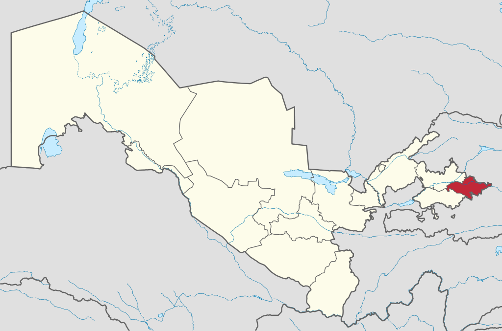
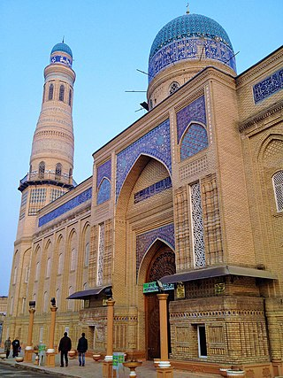

|  |  |
Andijon viloyati— Oʻzbekiston Respublikasi tarkibidagi viloyat. Fargʻona vodiysining sharqiy qismida. 1941-yil 6-martda tashkil etilgan. Maydoni 4,2 ming km². Aholisi 3 253 501 kishi (2022-yil 1-yanvar holatiga). Andijon viloyatida 14 qishloq tuman, 11 shahar va 95 qishloq fuqarolari yigʻini bor (2000). Markazi — Andijon shahri.[2]
Tabiati Andijon viloyati yer yuzasi asosan tekislik. Hozirgi relyefi va yer yuzasidagi jinslar toʻrtlamchi geologik davrning katta-kichik daryolari va irmoqlarining faoliyatidan hosil boʻlgan. Viloyatning gʻarbiy qismi qirli tekislik (bal. 400-500 m), sharqi (Andijon shahridan sharda) Fargʻona va Oloy tizmalarining tarmoqlaridan iborat. Andijon viloyati geologik aktiv zonada joylashgan, kuchli zilzilalar boʻlib turadi (qarang Andijon zilzilasi). Iqlimi keskin kontinental, quruq. Togʻ tizmalari Fargʻona vodiysini sovuq havoning kirib kelishidan toʻsib turganligi uchun qishda Andijon viloyatida ob-havo birmuncha barqaror. Yozi issiq, iyulning oʻrtacha temperaturasi 27,3°, qishi nisbatan sovuq, yanvarning oʻrtacha temperaturasi −3°. Vegetatsiya davri 217 kun. Yiliga 200 — 250 mm yogʻin tushadi. Av. Oʻzbekistonning boshqa viloyatlariga nisbatan suv resurslariga boy. Daryolari yogʻindan, togʻlardagi koʻp yillik qor va muzliklardan suv oladi. Asosiy daryosi — Qoradaryo (Sirdaryo irmoqlaridan biri). Uning irmoqlari — Moylisuv, Oqboʻra, Aravonsoy va boshqa Av. daryolarining suvi sugʻorish uchun ishlatiladi. Tuproqlari boʻz, qoʻngʻir, oʻtloqi, oʻtloqi-botqoq tuproqlar, qumtosh, mergel, less va chaqirtoshlardan iborat. Bahorda adirlar efemer oʻsimliklar bilan qoplanadi. Av.ning ekin ekilmaydigan tekislik qismida shuvoq-shoʻra oʻsimliklari, togʻ yon bagʻirlarida pista, bodom oʻsadi. Yovvoyi hayvonlar (buri, tulki, qobon va boshqalar) kam uchraydi; sudraluvchilar, kemiruvchilar, qushlar, suv havzalarida baliqlar bor
.Aholisining koʻpchiligini oʻzbeklar tashkil etadi. Qirgʻizlar, Tojiklar, Uygʻurlar, Ruslar, Koreyslar, Qangli va boshqalar ham bor. Rossiya Qoʻqon xonligini bosib olgach, bu yerga rus, ukrain, tatar, arman, yahudiy va boshqa millat vakillari koʻchib kelgan. 1 km² ga oʻrtacha 517 kishi toʻgʻri keladi. Milliy tarkibi: oʻzbeklar — 86,8 %, qirgʻizlar 3,8 %, tatarlar 3,1 %, Qanglilar 2%, ruslar 2 %. Shaharliklar 657,7 ming kishi, qishloq aholisi 1539,2 ming kishi (2000).
Hududiy boʻlinishi Andijan districts.png Tuman nomi Tuman markazi 1 Andijon (tuman) Kuyganyor 2 Asaka tumani Asaka (shahar) 3 Baliqchi tumani Baliqchi (shahar) 4 Boʻston (tuman) Boʻz (shaharcha) 5 Buloqboshi tumani Buloqboshi 6 Izboskan (tuman) Poytugʻ 7 Jalaquduq (tuman) Jalaquduq 8 Xoʻjaobod tumani Xoʻjaobod 9 Qoʻrgʻontepa tumani Qoʻrgʻontepa 10 Marhamat tumani Marhamat 11 Oltinkoʻl (tuman) Oltinkoʻl (qilshloq) 12 Paxtaobod tumani Paxtaobod 13 Shahrixon (tuman) Shahrixon (shahar) 14 Ulugʻnor (tuman) Oqoltin 15 Xonobod (shahar) Xonobod 16 Andijon (shahar) Andijon Xoʻjaligi
Andijon viloyati respublika ishlab chiqarishda va madaniy taraqqiyotida yetakchi oʻrin tutgan viloyatlardan biri. Respublikaning 2,6 % neftini, 8,3 % paxtasini, 8,7 % paxta tolasini, 8,7 % oʻsimlik moyini beradi (2000; rejaga nisbatan). Tabiiy resurslar, qishloq xoʻjaligi xom ashyosi negizida ishlaydigan sanoat tarmoklari, shuningdek aholiga isteʼmol buyumlari ishlab chiqaradigan korxonalar barpo etildi. Viloyatda tadbirkorlik rivojlanib borayapti. Uni qoʻllab-quvvatlash maqsadlariga 2 mlrd. soʻmdan ziyod kredit berilib, 3,4 mln. AQSH dollari miqdorida chet el sarmoyasi jalb qilindi (2000). 1995-2000-yillar mobaynida viloyat iktisodiyotida 23,5 mlrd. soʻm chet el sarmoyasi kiritildi.
Sanoati Viloyatda foydali qazilmalarni qazib chiqarish, paxtachilik shundayligicha xom ashyo sifatida metropoliyam joʻnatilar edi. 1907-yil yarim hunarmandchilikka asoslangan yogʻ zavodi qurildi. Dastlab bu zavod bir kecha-kunduzda 50 t chigitni qayta ishlab, 8 t ga yaqin yogʻ chiqarar edi. 1954-yilda zavod yogʻ-moy kombinatiga aylantirildi. 1960-70 yillarda Andijon shahrida „Elektrodvigatel“, „Elektroapparat“ kabi yirik korxonalar, Marhamatda esa „Elektrotexnika“ zavodi qurildi. 1941-yil Andijon shahrida motorsozlik zavodi ishga tushirildi. Mustaqillik yillarida viloyat industriyasi oʻz yoʻnalishini oʻzgartirib, tubdan rivojlanmoqda. Mavjud korxonalar davlat tasarrufidan chiqarilib, mulkchilikning oʻzgacha shakliga kirib bormoqda. Xususan aksariyat yirik va oʻrta korxonalar negizida aksiyadorlik jamiyatlari tashkil etildi. Viloyatda mulkchilikning barcha turiga oid 160 sanoat korxonasi bor (2000). Bulardan yiriklari: Bobur nomidagi ip-gazlama ishlab chiqarish aksiyadorlik jamiyati (Andijon shahrida; tumanlarda boʻlimlari bor), „Andijon agrofirmasi“ aksiyadorlikjamiyati, Andijon avtomobil oʻrindiqlari zavodi, Andijon biokimyo zavodi, Andijon irrigatsiya mashinasozlik zavodi, Andijon „Semurgʻ“ trikotaj aksiyadorlik birlashmasi, Andijon don mahsulotlari" aksiyadorlik jamiyati, „Andijonkabel aksiyadorlik jamiyati“, Chinobod paxta tozalash aksiyadorlik jamiyati. 1991-2000-yillar davomida Andijon viloyatida jahon andozasi darajasidagi mahsulotlar ishlab chiqaruvchi zamonaviy qoʻshma korxonalar bunyod qilindi. Viloyatda 79 qoʻshma korxona, 8447 kichik va xususiy korxona mavjud. Viloyatdagi qoʻshma korxonalar butun viloyat yalpi sanoat mahsulotining 53 %dan koʻprogʻini ishlab chiqarmokda (2000). Oʻrta Osiyoda yagona avtomobilsozlik korxonasi — Oʻzbek-Janubiy Koreya „OʻzDEU avto“ kompaniyasi Asaka shahrida joylashgan. Italiyaning „Aka-uka Federichi“ aksiyadorlik jamiyati bilan hamkorlikda Asakada barpo etilgan Oʻzbek-Italiya „FAM“ qoʻshma korxonasi soatiga turiga qarab 1-1,5 t makaron ishlab chiqarish quvvatiga ega. Shahrixon tumanidagi Segazaqum qishlogʻida kalava ip tayyorlaydigan va kelgusida undan gazlama toʻqiydigan „ANTEKS“ ochiq turdagi aksiyadorlik jamiyati korxonasi barpo etildi va irrigatsiya bilan bogʻliq boʻlgan tarmoklar, paxtani qayta ishlash, mashinasozlik va metallsozlik, elektrotexnika sanoatlari, qurilish materiallari ishlab chiqarish, kimyo, yengil (ip-gazlama, paypoq fabrikalari va boshqalar), oziq-ovqat sanoati eng rivojlangan tarmoklardir. Viloyat mamlakatda neft va gaz qazib chiqarishda salmoqli oʻrin tutadi. Oʻnga yaqin neft va neft-gaz konlari (Andijon neft koni, „Xoʻjaobod“, „Boʻston“, „Janubiy Olamushuk“, „Xartum“, „Polvontosh“, „Xoʻjausmon“ va boshqalar) ishlab turibdi. Xoʻjaobod — Andijon — Asaka gaz quvuri bor. Andijon viloyatida dastlabki paxta tozalash zavodlari Andijon shahrida 1911-yilda, Asakada 1912-yilda, Shahrixonda 1915-yilda qurilgan. Sanoatning bu turi paxta yetishtirishga qarab tez rivojlandi. 1924-yil paxta zavodlarida 25 ming t xom ashyo qayta ishlangan edi. 1999-yilda mavjud 13 ta paxta qayta ishlash korxonalarida 325 ming tdan ziyod paxta qayta ishlandi. Viloyatda yetishtirilayotgan pilla, jun, teri umuman qayta ishlanmasdan, lanib, 1999-yil oktabr ida ishga tushirildi). Baliqchi tumani notoʻqima matolar ishlab chiqarish yopiq turdagi aksiyadorlik jamiyati shaklidagi Oʻzbek — Amerika qoʻshma korxonasi ham oʻz mahsulotlari bilan chet elda eʼtibor qozongan korxonalardandir. Qoʻshma korxona zamonaviy uskunalar bilan qayta jihozlandi. Kalava ip va xom gazlama tayyorlanadigan mazkur korxonada 1300dan ortiq ishchi ishlaydi (2000). Shuningdek, viloyatda rivojlangan mamlakatlarning sarmoyalari jalb qilingan „Andijon-Praga“, „Andijon durdonasi“, „Navigul“, „Oʻz-Koromko“, Oʻzbek-Rus-Britaniya „Mask“, „Al-Osiyo“ qoʻshma korxonalari va Oʻzbek-Amerika qoʻshma korxonasi filiali bor.
Qishloq xoʻjaligi Viloyat qishloq xoʻjaligining asosiy tarmogʻi — paxtachilikdir. Paxtaning yalpi hosili va hosildorligi jihatidan Andijon viloyati mamlakatda oldingi oʻrinlarda turadi. Ayniqsa mustaqillikdan keyin paxtakorga erkinlik berilgach, paxtachilikda tub oʻzgarishlar sodir boʻldi. 1997-yildan chigitni keng maydonlarda plyonka ostiga ekish texnologiyasi joriy etildi (mazkur texnologiyani qoʻllashda viloyat hokimi, Oʻzbekiston Qahramoni Qobiljon Obidov katta jonbozlik koʻrsatdi). Paxta, gʻalla almashlab ekilishi yoʻlga qoʻyildi. Faqat mineral oʻgʻitlarga qarab qolmasdan mahalliy oʻgʻitlardan ham foydalanildi. Xususan gidroliz zavodining chiqindilaridan kompost tayyorlab, tuproq unumdorligini oshirishga ahamiyat berildi; ekin qator oralariga ammiak suvi oqizish oʻzlashtirildi. Gʻoʻza navlarini tuproq va iqlim sharoitiga koʻra tanlashga eʼtibor berildi. Har yili katta maydonlarda paxtaning „Oqdaryo“, „Armugʻon“, „Fargʻona-5“ singari istiqbolli navlari sinab koʻrildi va muntazam yangilanib borildi. Keyingi yillarda sinovdan oʻtib, ertapishar, tolasi pishiq, chigiti toʻla, kasalliklarga chidamliligiga ishonch hosil qilingan „Okdaryo“ navi koʻproq ekildi. Natijada mamlakatning boshqa viloyatlariga qaraganda gʻoʻza Andijon viloyatida barvaqt yetilmoqda. Sentabr oyiga qadar hosilning asosiy qismi yigʻib olinmoqda va yuqori navlarga oʻtkazilmoqda. 2000-yilda Oltinkoʻl tumanidagi „Ittifoq“ jamoa xoʻjaligida gektaridan oʻrtacha 45,7 s, Asaka tumanidagi „Yangi hayot“ jamoa xoʻjaligida 48,4 s atrofida hosil olindi. Shahrixon tumanidagi Gʻ. Joʻrayev nomidagi jamoa xoʻjaligining fermeri N. Toshmatov 60 sdan xirmon uydi. Andijon viloyatida 2000-yilda sentabr oyidayoq 305 ming tdan ziyod paxta tayyorlanib, shartnoma rejasi mamlakatda birinchi boʻlib bajarildi. Gʻallachilikda ham „Andijon maktabi“ yaratildi. Don 3 barobar koʻpayib, hosildorlik 1,2-marta oshdi. 2000-yilda gʻalla hosildorligi moʻljaldagi 70,8 sdan oshib ketdi. Marhamat tumanining Ulugʻtogʻ adirlarida Oxunboboyev nomidagi jamoa xoʻjaligining ijarachisi Muhammadsharif Toshpoʻlatov 67 s dan, Baliqchidagi Xayrixon Ergasheva nomidagi shirkat xoʻjaligida ijarachilardan Erkinboy Shukurov, Alijon Komilov, Turobjon Hakimov 85 sdan don olishdi. Shahrixon tumanidagi „Oltin vodiy“ jamoa xoʻjaligi gʻallachilik brigadasi boshligʻi Oʻzbekiston Qahramoni Sodiqjon Abdurasulov uzoq yillar davomida donchilikda va paxtachilikda yuqori koʻrsatkichlarga erishdi. U Andijon viloyatida boshqa mintaqalardan keltirilgan yangi bugʻdoy navlarini sinash va ulardan moʻl hosil olish boʻyicha tajriba maktabi yaratdi. 2000-yil hosili uchun viloyatda 74 ming ga maydonga elita va superelita urugʻlari ekildi. Kuzgi bugʻdoyning istiqbolli „Andijon-1“, „Andijon-2“, „Chillaki“ navlari sinab koʻrilib, ularning parvarish tartibi aniqlab chiqildi. Keyingi yillarda boshqa viloyatlarda ham andijonliklar yaratgan yangi navlar keng ekilmoqda. 2000-yilda davlatga 250 ming t ga yaqin gʻalla topshirildi. Uning 150 ming t sidan ziyodini sara urugʻlik tashkil etadi. Gʻallachilik 1999-yilda Andijon viloyatiga 9,3 mlrd. soʻmdan ortiq daromad keltirdi. (1994-yil yanvarda bosh Asaka avtomobil zavodidan chiqqan yangi avtomobillar. Oʻzbekiston Respublikasi Prezidenti Islom Karimov Asaka avtomobil zavodila, 1996-yil 19-iyul. Qishloq xoʻjalikda, shuningdek bogʻdorchilik, tokchilik, sabzavotchilik, don va chorvachilik mahsulotlari yetishtirish bilan ham shugʻullaniladi. Bogʻdorchilikda Andijon viloyati anor, anjir, bodom, behi, nok, shaftoli, olma, uzum yetishtirish bilan ayniqsa mashhur. Viloyatda aholi soni koʻpligi sababli adirlarda bogʻlar yaratishga katta ahamiyat berilgan. Shunday bogʻlardan eng mashhuri „Sohibkor“ meva-tokchilik ishlab chiqarish shirkatlar uyushmasi bogʻidir. Mazkur bogʻ 1981-yilda, Asaka tumanidagi Fayziobod qishlogʻidan 3-4 km narida Asaka adirlarining suvsiz qovjirab yotgan yerlari bagʻrida pastdan quvur orqali suv chiqaribyara-tilgan. Bogʻning barpo etilishi Oʻzbekistonda xizmat koʻrsatgan qishloq xoʻjalik xodimi Tilavoldi Yoqubov nomi bilan bogʻliq. Andijon viloyati bogʻlarida mevali daraxtlardan tashqari toknint Andijon kora uzu mi navi keng ekiladi. Qishloq xujalikda foydaniladigan yerlar maydoni tomorqa yerlarini qoʻshgan holda 256,7 ming ga. Qishloq xujalik ekinlari ekiladigan jami yerlari 257,6 ming ga, shu jumladan haydaladigan yer 200,9 ming ga, yaylovlar 21,7 ming ga (2000). Barcha ekin maydoni 202,5 ming ga, shu jumladan don ekinlari 82,5 ming ga, paxta ekiladigan yer PO ming ga, kartoshka, sabzavot-poliz ekinlari 4,9 ming ga, ozuqa ekinlari 16,1 ming ga, 3500 ga oʻrmonzor bor (2000). Grechixa va soya ham yetishtirilmoqda. Umuman viloyatda mirishkor dehqon yil davomida 2-3-martadan hosil olmokla. Andijon viloyatida Usmon Yusupov nomidagi Katta Fargʻona, Janubiy Fargʻona, Katta Andijon, Savay, Andijonsoy, Shah-rixonsoy va boshqa kanallar bor. Adir zonalaridagi dalalarga suv nasos stansiyalari yordamida chiqariladi. Qoradaryoda Andijon suv ombori barpo qilingan. Yerning meliorativ holatini yaxshilash maqsadida 7,8 ming km kollektor-drenaj tarmokdari qurilgan. Viloyatning hamma tumanlaridagi sugʻoriladigan maydonning asosiy qismida paxta va don ekiladi. Andijon viloyatida 13 jamoa xoʻjaligi, 6 davlat xoʻjaligi, 13 xoʻjaliklararo korxona, 133 shirkat xoʻjaligi, 36 boshqa xoʻjalik, 2724 fermer xoʻjaligi mavjud. Jamoa xoʻjaliklarida chorvachilik asosan sut yetishtirishga ixtisoslashgan, togʻ oldi va togʻli tumanlarda qoʻychilik rivojlangan. 95 ming qoramol, 56 ming sigir, 65 ming qoʻy va echki, 190,2 ming parranda bor (2000).
Transporti Temir yoʻl transporti viloyatda asosiy transport turlaridan biri. Uning uz. 2459 km (2000). Viloyatda dastlabki temir yoʻl 19-asr oxirlarida qurilib, keyinchalik undan tarmoqlar davom ettirilgan. Urushdan oldin Asaka — Shahrixon (1931), Uchqoʻrgʻon — Toshkoʻmir (1935) va boshqa temir yoʻllar qurildi. Barcha avtomobil yoʻllarining 6,2 ming km qismi qattiq qoplamali (2000). Havo yoʻllari Andijon shahrini Toshkent, Moskva, Sankt-Peterburg va boshqa shaharlar, shuningdek Kavkaz, Qrim bilan bogʻlaydi. Andijon shahri koʻchalarida, shuningdek Andijon shahridan Kuyganyor shaharchasiga ilgari trolleybus qatnagan. Hozirda jamoat transporti sifatida zamonaviy avtobuslar va boshqa yoʻnalishli marshrutlar faoliyati yoʻlga qoʻyilgan.
Madaniy-maorif va sogʻliqni saqlash 1999/2000 oʻquv yilida viloyatda 738 umumiy taʼlim maktabi boʻlib, 510 mingdan ziyod oʻquvchi, 24 gimnaziyada 7538 ming oʻquvchi, 32 akademik litseyda 5862 oʻquvchi, 28 musiqa va 62 sport maktabida 30940 oʻquvchi taʼlim oldi.
Viloyatda 5 oliy oʻquv yurti bor: Andijon Mashinasozlik instituti, Andijon tibbiyot instituti, Andijon qishloq-xoʻjaligi va agrotexnologiyalar instituti, Andijon Davlat universiteti, Andijon iqtisodiyot va qurilish instituti. Andijon oliy oʻquv yurtlarida 10,8 ming talaba taʼlim oldi (2000). 1999-yil oktabrda Kuyganyor shaharchasida (Andijon tumani) Oʻzbekiston Respublika Andijon viloyati va suv xoʻjaligi vazirligi Qishloq xujalik ilmiy ishlab chiqarish markazining Sugʻoriladigan yerlarda gʻalla va dukkakli oʻsimliklar yetishtirish ilmiy tadqiqot instituti tashkil etildi. Institutning asosiy vazifasi mamlakatda sugʻoriladigan yerlarda dehqonchilik sharoitiga moslashgan yangi don navlarini yaratish, tumanlashgan va istiqbolli gʻalla va dukkakli oʻsimliklarni yetishtirish texnologiyasini ishlab chiqarishdan iborat. Viloyat shahar va tumanlarida 1998- 2000-yillarda 19 kollej va akademik litseylar binolari qurilib ishga tushirildi. Ular zamonaviy dastgoh va texnika bilan jihozlandi. Viloyatda 20 kasb-hunar kollejida 22389 oʻquvchi, 28 akademik litseyda 15928 oʻquvchi oʻqiydi. Andijon shahridagi va Oqoltin tumanidagi maishiy xizmat kasb-hunar kollejlari, Andijon tumanining Oqyor qishlogʻidagi sanoat kasb-hunar kolleji (mazkur kollejga Oʻzbekiston Respublikasi Prezidenti Islom Karimov ikki marta tashrif buyurdi) eng namunali oʻquv dargohlaridir. Viloyatda 4 muzey (Andijon viloyat adabiyot va sanʼat muzeyi, Andijon viloyat oʻlkashunoslik muzeyi, Bobur uy muzeyi, Choʻlpon uy muzeyi), 508 ommaviy kutubxona (8150,4 ming nusxa asar), 183 klub, 37 madaniyat uyi, 966 badiiy havaskorlik jamoalari bor. Andijon shahridagi Bobur nomidagi viloyat kutubxonasida (1967-yil ishga tushgan) 2000 urnnli qiroatxona mavjud (2000). Andijon viloyatida 3 ta teatr bor. Yoʻldosh Oxunboboyev nomidagi Andijon viloyat musiqali drama va komediya teatri Oʻzbekistondagi toʻngʻich teatrlardan biri boʻlib, unga 1919-yil noyabrda Hamza asos solgan (qarang Andijon teatri). Abbos Bakirov nomidagi Andijon davlat bolalar va yoshlar teatri 1990-yil 1-dekabrda „Istiqbol“ teatr studiyasi asosida tashkil etilgan (qarang Andijon bolalar va yoshishr teatri). Andijon viloyat „Lola“ Qoʻgʻirchoq teatri 1968-yil aprelda Respublika davlat qoʻgʻirchoq teatri qoshidagi studiya bitiruvchilari asosida tashkil boʻlgan Andijon viloyatidan Halima Nosirova, Lutfixonim Sarimsoqova, Tamaraxonim, Soyib Xoʻjayev, Abbos Bakirov, Gʻanijon Toshmatov, Muzaffar Muhamedov kabi yirik sanʼatkorlar; Fattohxon Mamadaliyev, aka-uka Ismoiljon va Isroilon Vahobovlar kabi xalq hofizlari; Habiba Oxunova, Sherali Joʻrayev, Turgʻun Xontoʻrayev, Hoshimjon Olimjonov kabi Oʻzbekiston xalq artistlari, Toshkanboy Egamberdiyev (Asakadan) boshliqdorbozlar sulolasi yetishib mashhuru maʼlum boʻlishgan. Andijon viloyatida 5 madaniyat va istirohat bogʻi, koʻplab koʻkalamzor xiyobonlar bor. Ayniqsa Andijon shahridagi Alisher Navoiy nomidagi madaniyat va istirohat bogʻi (1934-yil tashkil etilgan) mashhurdir. 1997-2000-yillarda bogʻ butunlay qayta qurilib, nihoyatda kurkamlashtirildi. Ramziy burgut ostidagi qahvaxonaga uygʻunlashtirilib qurilgan „Amfiteatr“ (2000) bayram tantanalari va boshqa tomoshalar oʻtkaziladigan maskanga aylangan. Andijon shahrining janubi-sharqida — Bogʻishamolda 300 ga maydonni egallagan Bobur nomidagi milliy bogʻ (Bogʻi Bobur), Andijon shahrining markaziy qismida Choʻlpon bogʻi tashkil etildi. Andijon viloyatida ziyoratgoh joylar koʻp. Sultonobod, Xonobod, Andijon dengizi kabi joylar chet ellik sayyoxlarda katta taassurot qoldiradi. Xoʻjaobod tumanida Bobur qadamjolaridan biri — Lotkontepada ajoyib ziyoratgoh barpo etildi. Bu ziyoratgoh Shirmonbuloq, Chilustun togʻlari bilan tutashib ketgan. Asaka, Shahrixon, Poytugʻ, Qoʻrgʻontepa shaharlari xalq hunarmandchiligi badiiy buyumlari tayyorlash bilan mashhur. Viloyatda 14,1 ming oʻrinli (10 ming kishiga 64 oʻrin) 70 kasalxona muassasasi, 6233 vrach, shu jumladan 317 stomatolog (10 ming kishiga 28,7 vrach), 22 ming oʻrta maʼlumotli tibbiy xodim, 5 sanatoriy bor (2000). Andijon shahrida Respublika shoshilinch tibbiy yordam markazining boʻlimi ishga tushirildi (2000).
Sport Andijon viloyatida sportchilari sportning 37 turi boʻyicha turli darajadagi musobaqalarda ishtirok etadi (2000). Chavandozlik, chim ustida xokkey, yengil atletika, futbol, tennis, sport gimnastikasi, boks va boshqa Chim ustida xokkey boʻyicha „Andijanka“ ayollar jamoasi Yevropa chempionlari kubogi sohibi. 1996-yildan „Andijanka“ ayollar futbol jamoasiga aylantirildi. Oʻzbekiston Respublikasida xizmat koʻrsatgan murabbiy M. D. Kim rahbarligida „Andijanka“ 1998, 1999-yillarda Oʻrta Osiyo mamlakatlari ayollar futbol jamoalari musobaqalarida muvaffaqiyatli qatnashib, kubok hamda chempionlikni qoʻlga kiritdi. Andijonda xizmat koʻrsatgan sport ustasi, Yevropa chempioni, jahon kubogi gʻolibi, jahon rekordchisi yengil atletikachi Svetlana Oʻlmasova va uning jamoadosh dugonasi Zamira Zaytseva, boks boʻyicha Yevropa chempioni Feliks Pak, sambo boʻyicha Yevropa chemponi Mels An kabi mashhur sportchilar tarbiyalanganlar. Baydarkachi Tatyana Levina respublika terma jamoasi tarkibida keyingi oʻn yillar davomida yetakchilikni qoʻldan bermay kelmoqda (2000). Olimpiada oʻyinlarida sobiq Ittifoq terma jamoalari tarkibida andijonlik sportchilar muntazam ishtirok etganlar. Ular orasida Seul Olimpiadasining ogʻir atletika boʻyicha kumush medali sovrindori Noil Muxammadiyorov, chim ustida xokkey boʻyicha — Igor Davidov, Moskva Olimpiadasining chim ustida xokkey boʻyicha bronza medali sovrindorlari — Laylo Ahmedova, Nelya Gorbatkova, Alina Xam, Valentina Zazdravnix kabil ar bor. Oʻzbekiston mustaqillikka erishgach, Andijon viloyati sportchilariga ham xalqaro musobaqalarda qatnashishga keng yoʻl ochildi. 2000-yilda Sidney (Avstraliya)da oʻtkazilgan 27-olimpiada oʻyinlarida mamlakat boʻyicha yagona oltin medalni andijonlik bokschi Muhammadqodir Abdullayev oldi; bokschi Sergey Mixaylov bronzamedali sohibi boʻldi. Bokschilardan Oʻtkirbek Haydarov, Ruslan Chagayevlar jahon chempionlaridir. Andijon shahri Respublika olimpiada oʻrinbosarlari bilim yurtining boks boʻyicha murabbiylari M. G. Qoʻchqorov, A. A. Razmaxov „Oʻzbekiston Respublikasida xizmat koʻrsatgan sport ustasi“ unvoniga sazovor boʻlishgan. Andijondan mohir sportchilarni tayyorlashda sport murabbiysi V. A. Zolotaryovning katta xizmati bor. Andijon shahrida zamonaviy sport inshootlari qurilgan: turli darajadagi xalqaro musobaqalar oʻtkaziladigan tennis korti majmui (1998-yilda ishga tushgan; oʻn ming tomoshabinga moʻljallangan), „Navroʻz“ futbol stadioni, „Yambol“ sport majmui, chim ustida xokkey boʻyicha „Xalqaro doʻstlik“ stadioni, shaxmat-shashka klubi, gimnastika majmui, suzish havzalari va boshqa Andijon tennis inshootida har yili professional tennischilarning xalqaro turnirlari muntazam oʻtkazib kelinadi. 1996-yil oʻtkazilgan „Chellenjer“ turnirida jahondagi 26 davlatdan vakillar ishtirok etdi. 1997- 1998, 1999-yillari oʻtkazilgan xalqaro „Satellit“ va „Istiqbol“ turnirlarida ham 20 ga yaqin davlatlardan vakillar qatnashdi. Bu xalqaro turnirlardagi katta raketka ustalarining oʻyinlari andijonlik yosh oʻquvchi-tennischilar uchun katta mahorat maktabi boʻlib xizmat qilmoqda. Tennis klubida 150 ga yaqin yoshlar muntazam shugʻullanib keladi, ularga 5 murabbiy saboq beryapti (2000). Oʻquvchilar orasida respublika musobaqalari sovrindorlari bor. Andijon viloyati „Navroʻz“ futbol komandasi mamlakat milliy futbol chempionatida ishtirok etib keladi. Viloyatda 70 bolalar va oʻsmirlar sport maktabi ishlaydi; ularda 32 ming oʻquvchi turli sport turlari bilan shugʻullanadi. Andijon shahrida olimpiada oʻrinbosarlari bilim yurti va ixtisoslashtirilgan bolalar-oʻsmirlar sport maktablari yuqori malakali sportchilar tayyorlaydi.
Adabiyoti Andijon olamshumul shuhrat egasi Zahiriddin Muhammad Bobur, Nodirabegimlar yurti. 20-asr yangi oʻzbek adabiyotining ulkan namoyandasi Abdulhamid Choʻlpon Andijonda tavallud topgan. Bu yerda Zokirjon Habibiy, Oraziy, Vosit Saʼdulla, Xoshimjon Razzoqov, Sayfiy, Anisiy, Azimiy, Boqir kabi oʻnlab gʻazalnavislar yashab ijod etdilar. Shu zaminda shakllanib obroʻ eʼtibor qozongan Sobir Abdulla, Sulton Joʻra, Komil Yashin, Toʻxtasin Jalolov, Sayda Zunnunovalar oʻzbek adabiyoti rivojida alohida oʻrin va mavqega egadirlar. 20-asrning soʻnggi oʻn yilliklarida sheʼriyatda Oʻzbekiston xalq shoiri Toʻlan Nizom, Respublikada xizmat koʻrsatgan sanʼat arbobi Olimjon Xoldor, Oʻzbekistonda xizmat koʻrsatgan madaniyat xodimlari Tursunoy Sodiqova va Xoldorjon Quronboyev, isteʼdodli shoirlar — Fozil Emin, Halima Qoraboyeva, Ismoil Toʻlak, Xanifa Solihova, Abduhalil Qoraboyev, Shukur Qurbon, Usmonxon Shukurov, Farid Usmon, Zamira Roʻziyeva, Qobil Mirzo, Munavvara Tillaboyeva, Xurshida, Nabi Jaloliddin; nasrda Xabibullo, Qamchibek Kenja, Sotvoldi Rajabov, Ubaydulla Sodiqov, Odiljon Olimov, Omina Tojiboyeva; dramaturgiyada Rahbar Fayziboyeva, Zahriddin Muhitdinov, Nazirjon Rahimov, Ziyo Najmiy; bolalar adabiyetida Muqimjon Niyozov, Odil Abdurahmonlarning nomlari keng tanilgan. Nusrat Abdusalomov, Habib Siddiq, Najmiddin Ikromov, Rafiq Muxtor, Dilmurod Shokirov, Xamidullo Yusupov, Muborak Qosimova Oʻzbekiston Respublikasi Markaziy banki Andijon viloyat boʻlimining bosh binosi. Respublika shoshilinch tibbiy yordam markazi boʻlimi binosi kabi bir necha oʻnlab shoir va adiblar oʻz asarlarida mustaqillik davri hayotinm aks ettirmoqdalar. Andijon viloyatida Oʻzbekiston ijodiy uyushmalari (yozuvchilar, rassomlar, meʼmorlar, jurnalistlar va boshqalar)ning viloyat tashkilotlari faoliyat koʻrsatadi.
Matbuoti, radio va televideniyesi Andijon viloyatida 2 viloyat gazeta („Andijonnoma“, „.Andijanskaya pravda“), 14 tuman gazeta, 3 shahar gazeta („Asaka oqshomi“, 1995; „Xonobod ovozi“, 1992; „Qorasuv tonga“, 1992) chiqadi. Viloyatda, shuningdek 14 tarmoq gazeta, 2 jurnal („Limfa“ ilmiy ishlab chiqarish majmuasining „Limfalogaya“ jurnal, 1991-yildan 3 oyda bir marta rus tilida chiqadi; Andijon viloyati xalq taʼlimi boshqarmasining „Taʼlim ravnaqi“ oylik jurnal, 1999) nashr etiladi. Andijon viloyatida dastlabki radio eshittirishlari 1927-yildan boshlangan. Shundan buyon viloyat radiosi oʻzining mazmunli eshittirishlari bilan viloyat ijtimoiy-siyosiy hayotida oʻz oʻrni va ovoziga ega boʻlib kelmoqda. 1963-yilda Andijon viloyatlararo telestudiya tashkil etilib telekoʻrsatuvlar bera boshladi (mazkur studiya bir yilcha faoliyat koʻrsatib keyinroq texnik imkoniyatlar boʻlmaganligi tufayli oʻz faoliyatini toʻxtatgan). Respublikamiz mustaqillikka erishgach, Andijonda 1991-yil 25-oktabrda viloyat televideniyesi tashkil etilib, uning birinchi koʻrsatuvlari efirga uzatildi. Bir oylik koʻrsatuvlar vaqti 45 soatdan ortadi. Andijon viloyati radiosi oyiga 36 soatlik hajmda eshittirishlar beradi (2000). Bundan tashqari Andijon viloyatida 1997-yil 23-iyundan „Andijon“ yoshlar teleradiokompaniyasi yopiq turdagi aksiyadorlik jamiyati vodiy aholisiga telekoʻrsatuvlar, radioeshittirishlar olib boradi. Teleradiokompaniya „Tasvir“ nomi bilan gazeta nashr etadi; 1998-yilning oktabrdan uning „Vodiy sadosi“ radiosi faoliyat koʻrsatadi. Viloyatda, shuningdek „Taraqqiyot“ (1995-yildan) nodavlat telekanal i koʻrsatuvlar olib boradi.
Meʼmoriy yodgorliklari Qadimda va oʻrta asrlarda bunyod etilgan meʼmoriy yodgorliklar bizgacha yetib kelmagan. Andijon shahrida 19-asr oxirida qurilgan jome masjidi majmuasi saqlangan. Tarkibida masjid, minora va Madrasa bor. Jome masjidi Fargʻona vodiysida eng mahobatli binodir (qarang Andijon jome masjidi majmuasi). Shahrixonda oʻtgan asrda bino qilingan bir qancha mahalla masjidlari va madrasalari saqlangan. Shundan biri 19-asr boshida qurilgan Ponsod masjididir. Masjidning bezak qismlarini fargʻonalik ustalar ishlagan. Shahrixonda 1872-yil qurilgan Gumbaz madrasasi saqlangan. Andijon shahrida 20-asr boshida qurilgan 2 qavatli Axmadbekhoji uyi ham milliy meʼmorlik namunalaridan biri (qarang Ahmadbekhoji mehmonxonasi). Hozirgi Alisher Navoiy nomidagi madaniyat va istirohat bogʻi Ahmadbekhoji bogʻi oʻrnida bunyod etilgan. Boyning bogʻidagi shiypon binosi ham saqlanib qolgan. Paxtaobod shahrida 20-asr boshida qurilgan Otaqoʻzi madra-sasi yodgorligi ham diqqatga sazovor. Uning 5 minorasi bor. orasidagi Andijon viloyatining tabiiy va iqtisoodiy rangli xaritasiga q. Abdugʻulom Sultonov, Sobirjon Shokarimov, Shuhratjon Karimov